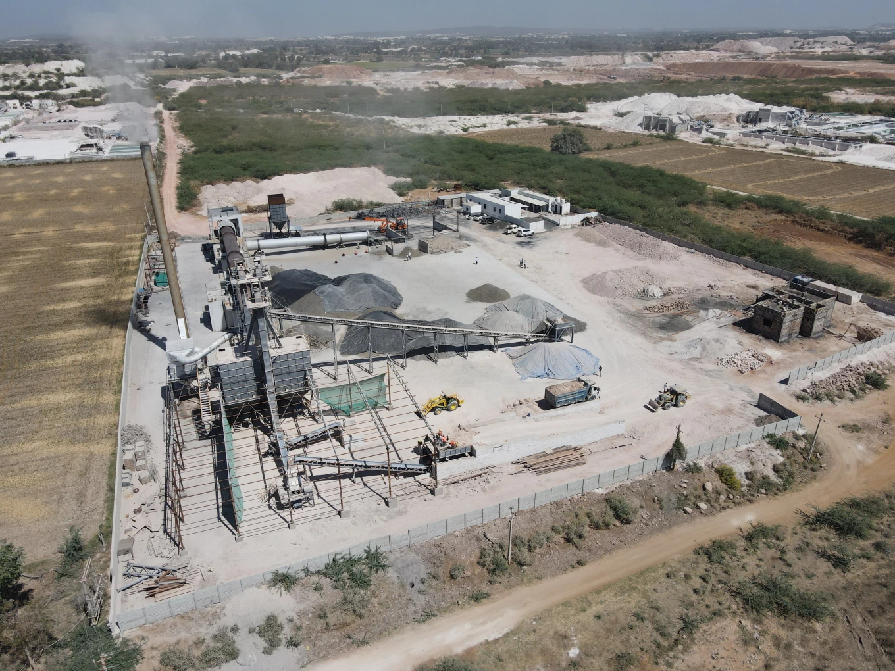
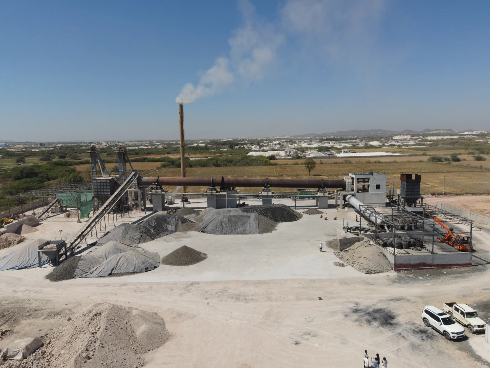
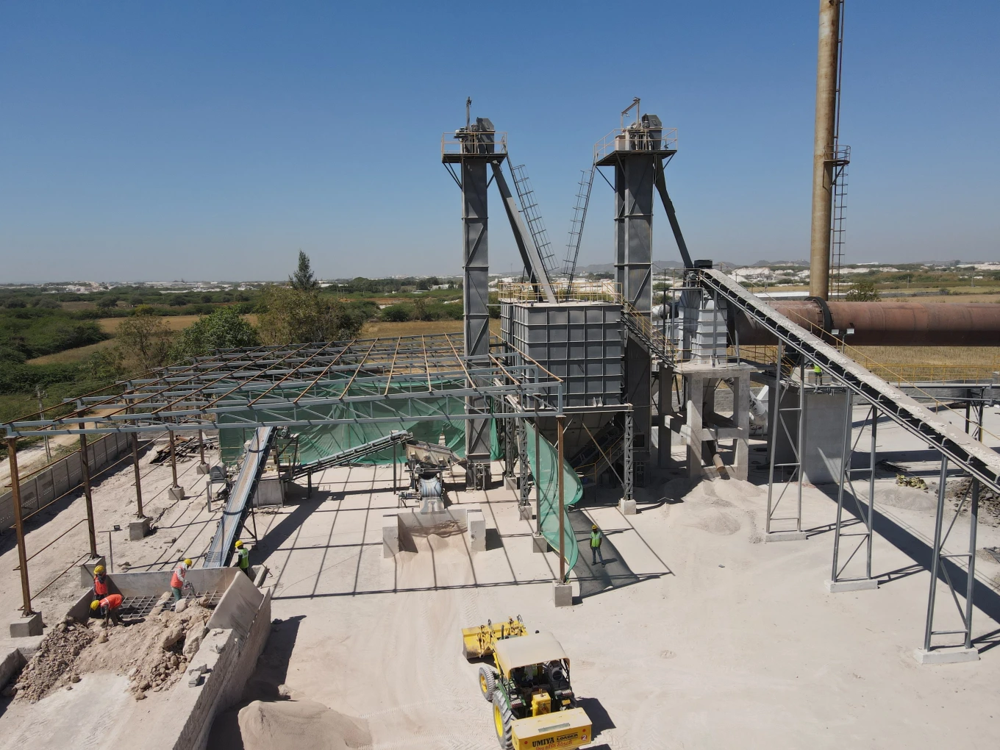
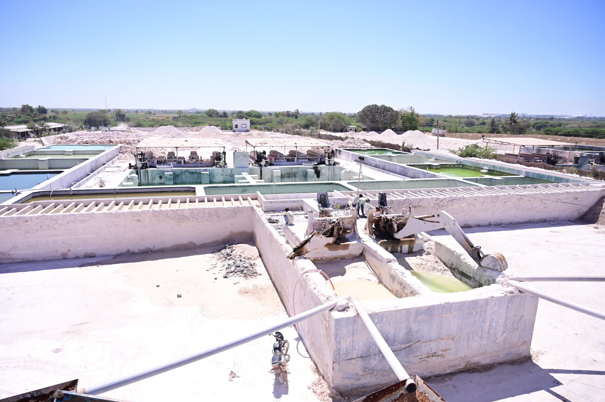

End-to-end manufacturing capability — from owned mines to calcination kiln to dispatch — all under one roof in Bhuj, Kachchh, Gujarat.
Rotary kiln – 61 metres long
2.5 metre diameter rotary kiln
Total production capacity
In-house beneficiation plants

Core EquipmentOur state-of-the-art rotary kiln is the centrepiece of our manufacturing process. The calcination in this kiln converts raw chamotte lumps into the consistent, high-quality calcined chamotte that defines our product quality.
| Specification | Value |
|---|---|
| Kiln Length | 61 metres |
| Kiln Diameter | 2.5 metres |
| Type | Rotary Kiln |
| Production Capacity | 3000 MT / month |
| Location | Village Mamuara, Bhuj, Kachchh |

From raw material extraction to finished product dispatch — fully integrated operations in Bhuj, Kachchh.


Mineral extraction from our own lease mines ensures consistent raw material quality and secured supply chain continuity.
Multiple on-site washing and beneficiation plants for raw material preparation, classification and impurity removal.
Continuous rotary calcination kiln producing consistently calcined chamotte at 3000 MT/month capacity.
In-house crushing and gradation equipment delivers precise particle sizes — 0–1 mm, 1–3 mm, 3–5 mm, 200 Mesh and custom.
Laboratory equipped for XRF analysis, wet chemical testing, particle size distribution (ASTM C:357), and bulk density measurement.
In-house transportation from mines to plant and from plant to customers — ensures timely delivery and minimises supply risk.
Large secured warehouse with export-grade packing: 1250 kg Jumbo bags with pallets and wrapping. 25 MT per container.
South Part of Survey No.29, Village Mamuara, Ta: Bhuj, Di: Kachchh, State: Gujarat, India.